Appendix C. Introduction to Twitter Bootstrap
Twitter Bootstrap (shortly, Bootstrap) is a popular CSS framework allowing to make your web site professionally looking and visually appealing, even if you don't have advanced designer skills. In this appendix, you can find some introductory information about Bootstrap and its usage examples.
Overview of Bootstrap Files
The source code of Bootstrap framework's components is spread across many CSS files. It is known that downloading multiple small files is typically slower than downloading a single large file. For this reason, Bootstrap CSS stylesheets are "concatenated" with the special tool and distributed in a form of a single file named bootstrap.css.
However, this bootstrap.css file has a disadvantage: it contains many characters (white space characters, new line characters, comments, etc.) unneeded for code execution, wasting network bandwidth when downloading the file, thus increasing page load time. To fix this problem, the minification is used.
The minification is the process of removing all unnecessary characters from the source code without changing its functionality. The minified Bootstrap file is called bootstrap.min.css.
It is generally recommended to use the minified file, especially in production environment, because it reduces the page load time. However, if you plan to dig into Bootstrap code to understand how it works, you better use the usual (non-minified) file, or even download the original source files (not concatenated ones).
Let's look in more details at the files stored inside the APP_DIR/public directory and its subdirectories (figure C.1).
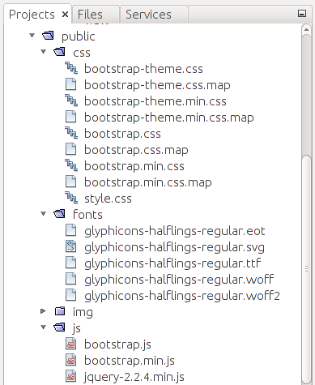
The css directory contains the CSS stylesheets:
-
The bootstrap.css and bootstrap.min.css files are the usual and minified versions of Bootstrap, respectively.
-
The bootstrap-theme.css is the optional Bootstrap theme file for a "visually enhanced experience". The bootstrap-theme.min.css is its minified version.
-
The style.css file is the stylesheet that can be used and extended by you to define your own CSS rules which will be applied on top of Bootstrap rules. This way you can customize the appearance of your web application.
-
You may also notice various files with .map extension, which is the MAP 1 files that can be used for debugging the CSS code.
The fonts directory contains several files (e.g. glyphicons-halflings-regular.svg) needed by Bootstrap for rendering icons. These icons (also called Glyphicons) can be used to enhance the appearance of the buttons and dropdown menus.
The APP_DIR/public/js subdirectory contains JavaScript extensions of the Bootstrap framework. They are implemented as jQuery plugins:
-
The bootstrap.js is the file containing the JavaScript code of the Bootstrap extensions. The bootstrap.min.js file is its minified version.
-
Because Bootstrap extensions are implemented as jQuery plugins, they require the latest version of jQuery library to be present. Thus, the js directory includes the jQuery library file jquery-2.2.4.min.js.
Grid System
In most websites, content is required to be organized in a table-like structure having rows and columns. In figure C.2, you can see an example layout of a typical website: it has the header block with a logo, the sidebar at the left, page content area in the middle, the ads bar at the right, and the footer at the bottom of the page. These blocks are arranged in a grid, although grid cells have unequal width (some cells can span several columns).
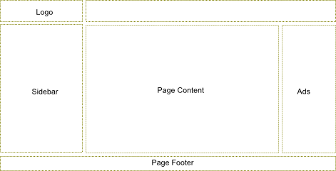
Bootstrap provides a simple layout grid system to make it easy to arrange content on your pages in rows and columns.
Each row consists of up to 12 columns 2 (figure C.3). Column width is flexible and depends on the width of the grid container element. Column height may vary depending on the height of the content of the cell. The space between columns is 30 pixels (15 pixels padding at both sides of the column).
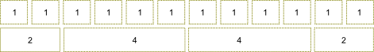
Columns can be spanned, so a single cell takes the space of several columns. For example, in figure C.3, the upper grid row consists of 12 columns, and each cell spans a single column. In the bottom row, the first cell spans 2 columns, the second and the third ones span 4 columns each, and the fourth cell spans 2 columns (in total we have 12 columns).
Why does Bootstrap's grid consist of only 12 columns?
Probably because 12 columns are enough for most websites. If you have more fine-grained grid with lots of columns, it would be more difficult to compute column spans without the calculator. Fortunately, Bootstrap allows for customizing the count of columns per row, so you can have as many columns as you wish.
Defining the Grid
To arrange elements in a grid on your web page, you start from defining the
container by adding a <div> element having the .container CSS class.
To add a new row to the grid, use a <div> element having the .row
CSS class, as shown in the example below:
<div class="container">
<div class="row">
...
</div>
</div>
To add columns, you use <div> elements with CSS class names varying from .col-md-1
to .col-md-12. The number in the class name specifies how many columns each grid cell
will span:
<div class="container">
<div class="row">
<div class="col-md-1">Cell 1</div>
<div class="col-md-5">Cell 2</div>
<div class="col-md-6">Cell 3</div>
</div>
</div>
In the example above, we have three cells. The first cell has a width of 1 (it
uses the .col-md-1 class), the second cell spans 5 grid columns (class .col-md-5)
and the third cell spans 6 columns (class .col-md-6).
As another example, let's define the layout that we saw in figure C.2. The layout has the header (logo spans 3 columns), the main content area (spans 7 columns), the sidebar (spans 3 columns), the advertisements bar (2 columns) and the footer. To produce this layout, we can use the following HTML code:
<div class="container">
<!-- Header -->
<div class="row">
<div class="col-md-3">Logo</div>
<div class="col-md-9"></div>
</div>
<!-- Body-->
<div class="row">
<div class="col-md-3">Sidebar</div>
<div class="col-md-7">Page Content</div>
<div class="col-md-2">Ads</div>
</div>
<!-- Footer -->
<div class="row">
<div class="col-md-12">Page Footer</div>
</div>
</div>
Offsetting Columns
In real web pages, sometimes the grid needs to contain "empty holes". You can define
such holes by offsetting cells to the right with the
help of CSS classes named from .col-md-offset-1 to .col-md-offset-12. The number in the
class name specifies how many columns should be skipped.
For example, look at figure C.4:
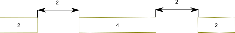
The grid above has three cells, the latter two cells are offsetted to the right, making empty holes. To define the grid like in figure C.4, you can use the following HTML code:
<div class="container">
<div class="row">
<div class="col-md-2">Cell 1</div>
<div class="col-md-4 col-md-offset-2">Cell 2</div>
<div class="col-md-2 col-md-offset-2">Cell 3</div>
</div>
</div>
Nesting Grids
You can create complex page layouts by nesting grids (for example, look at figure C.5).
To nest your content, you add a new <div> element containing .row class, and set of
.col-md-* columns within an existing .col-md-* column.
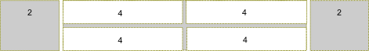
To produce the grid as shown in figure C.5, you can use the following HTML code:
<div class="container">
<div class="row">
<div class="col-md-2">Cell 1</div>
<div class="col-md-8">
<!-- Nested grid -->
<div class="row">
<div class="col-md-4">Cell 21</div>
<div class="col-md-4">Cell 22</div>
</div>
<div class="row">
<div class="col-md-4">Cell 23</div>
<div class="col-md-4">Cell 24</div>
</div>
</div>
<div class="col-md-2">Cell 3</div>
</div>
</div>
In the example above, we defined the grid consisting of three cells (denoted by gray color): the first cell spanning 2 columns, the second cell spanning 8 columns and the third cell spanning 2 columns. Then we put the nested grid rows inside of the second cell. Because the parent cell spans 8 columns, the child grid consists of 8 columns, too.
"Mobile First" Concept
Twitter Bootstrap is designed to support different devices varying from wide displays to tablets and mobile phones. By this reason, the layout grid is adapted to different screen resolutions.
This is also called the responsiveness, or the "mobile first" concept. Bootstrap is mobile-first, which means your website will be viewable and usable on any-sized screen. However, this does not free you of painstaking preparation and planning the layout.
This adaptation is performed in two ways. The first way is that the column width within the grid is flexible. For example, if you increase the size of the browser window, the grid will be scaled accordingly to fill the whole space.
But what will happen if your web page is too wide for the display? To see the hidden part, the site visitor will need to scroll it to the right. For mobile phones and other low-resolution devices this is not a good approach. Instead, it would be better for the grid to become "stacked" below some screen width. When the grid is stacked, its rows are transformed, making cells to be positioned one below another (see figure C.6 for example).
To better control when the grid becomes "stacked", Bootstrap provides you with additional
CSS classes: .col-xs-1 to col-xs-12 (the "xs" abbreviation means "extra-small" devices, or phones),
.col-sm-1 to .col-sm-12 ("sm" stands for "small devices", or tablets), and .col-lg-1 to .col-lg-12
(large devices, or wide displays). These classes can be used together with the .col-md-1 -- .col-md-12
classes, that we already used (the "md" abbreviation means "medium devices", or desktops).
For example, .col-md-* classes define the grid which will become "stacked" when the screen is
below 992 pixels wide, and horizontal for wider screens. The .col-sm-* can be used to make the
grid "stacked" below 768 pixel screen width, and horizontal above this point. The .col-xs-*
class makes the grid always horizontal, not depending on the screen width.
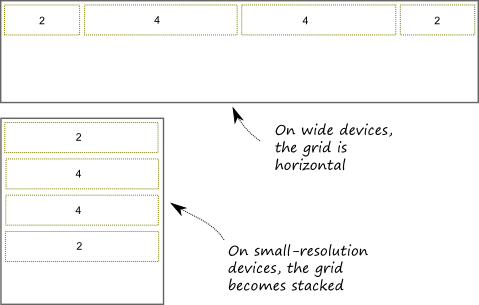
Table C.1 provides the summary of available grid classes and their breakdown page width.
| Class name | Breakdown width |
|---|---|
.col-xs-* |
<768px |
.col-sm-* |
>=768px |
.col-md-* |
>=992px |
.col-lg-* |
>=1200px |
Table C.1. CSS classes for defining layout grid
Bootstrap's grid system greatly simplifies the positioning of elements on a web page. However, using the grid system is not mandatory. For example, sometimes you may need a much more complex layout, and the simple grid system will be insufficient. In such a case, you can create and use your custom layout by using
<table>or<div>HTML elements.
Bootstrap's Interface Components
In this section, we will give a summary on useful interface components provided by Twitter Bootstrap. We plan to use some of these components in our further examples, and this section should give an idea of how you can use these widgets in your own websites.
Navigation Bar
Navigation bar is usually positioned on top of your website and contains the links to main pages, like Home, Download, Support, About, etc. Twitter Bootstrap provides a nice visual style for the navbar (see figure C.7 for example):
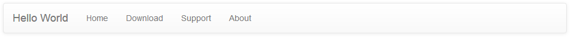
As you can see from the figure above, a navbar typically has the header (brand name of your site can be placed here) and the links to main pages. To put a navbar on your page, you use the following HTML code:
<nav class="navbar navbar-default" role="navigation">
<div class="navbar-header">
<a class="navbar-brand" href="#">Hello World</a>
</div>
<ul class="nav navbar-nav">
<li><a href="#">Home</a></li>
<li><a href="#">Download</a></li>
<li><a href="#">Support</a></li>
<li><a href="#">About</a></li>
</ul>
</nav>
In line 1 above, we used the <nav> element, which contains all the navigation
bar information. The associated CSS class .navbar is defined by Bootstrap and
provides the base navigation bar's appearance. The .navbar-default CSS class
specifies the "default" theme for the navigation bar.
The optional role attribute is an HTML
attribute allowing to annotate the page elements with machine-extractable
semantic information about the purpose of an element. In this example,
the attribute tells that the <nav> element is used for navigation.
In lines 2-4, we define the navbar header area, which contains the Hello World
hyperlink. The brand hyperlink typically points to the main page of your site. The hyperlink
has the .navbar-brand class that visually enhances the text.
In lines 5-10, we specify the navigation links for the Home, Download, Support and About
pages. These links are organized inside an <ul> unordered list element. The element has
CSS classes .nav and .navbar-nav that place list items in line and provide the hover item state.
Dropdown Menu
With Bootstrap navigation bar, it is possible to use the dropdown menu as a navigation item. For example, if the Support section of your site can be subdivided into Documentation and Help pages, these can be implemented as a dropdown menu (see figure C.8).
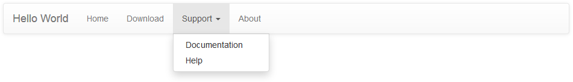
You define the dropdown menu by replacing the Support list item from the previous example in the following way:
<li class="dropdown">
<a href="#" class="dropdown-toggle" data-toggle="dropdown">
Support <b class="caret"></b>
</a>
<ul class="dropdown-menu">
<li><a href="#">Documentation</a></li>
<li><a href="#">Help</a></li>
</ul>
</li>
In the code above, we use the <li> element with CSS class .dropdown that indicates
the dropdown menu (line 1). In lines 2-4, the <a> element defines the hyperlink to show
when the menu is hidden (the Support text is shown followed by the triangle caret).
When the site user clicks the hyperlink, the dropdown menu (lines 5-8) appears. The <ul>
unordered list element with class .dropdown-menu defines its visual appearance. The dropdown
menu contains two items: the Documentation and Help hyperlinks.
Collapsible Navbar
As with the grid system, the navbar component supports different types of screen resolutions. On low-resolution devices, the navbar can be collapsed, as shown in figure C.9.
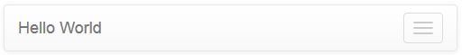
As you can see, in the collapsed mode, only the navbar header is displayed, and the three horizontal bars at the right denote the Toggle button. Clicking the button would expand the hidden navbar items.
You define the collapsible navigation bar as shown in the example below:
<nav class="navbar navbar-default" role="navigation">
<!-- Brand and toggle get grouped for better mobile display -->
<div class="navbar-header">
<button type="button" class="navbar-toggle" data-toggle="collapse"
data-target=".navbar-ex1-collapse">
<span class="sr-only">Toggle navigation</span>
<span class="icon-bar"></span>
<span class="icon-bar"></span>
<span class="icon-bar"></span>
</button>
<a class="navbar-brand" href="#">Hello World</a>
</div>
<!-- Collect the nav links, forms, and other content for toggling -->
<div class="collapse navbar-collapse navbar-ex1-collapse">
<ul class="nav navbar-nav">
<li><a href="#">Home</a></li>
<li><a href="#">Download</a></li>
<li class="dropdown">
<a href="#" class="dropdown-toggle" data-toggle="dropdown">
Support <b class="caret"></b>
</a>
<ul class="dropdown-menu">
<li><a href="#">Documentation</a></li>
<li><a href="#">Help</a></li>
</ul>
</li>
<li><a href="#">About</a></li>
</ul>
</div><!-- /.navbar-collapse -->
</nav>
Above in lines 3-12, we define the navbar header which will be displayed independently on screen resolution. The header contains the Toggle button with three horizontal bars and description text "Toggle navigation".
The collapsible part of the menu can be seen in lines 15-30. In this area, we put our navigation links and the dropdown menu items.
Inverse Navbar Style
The navigation bar can be displayed using two standard "themes": the default theme (we saw it above), and the inverse theme. The inverse theme makes the navbar elements be displayed in dark colors (figure C.10). You probably saw such an inverse navbar in the Laminas Skeleton Application demo.
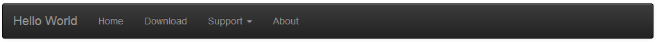
The inverse theme is defined by simply replacing the .navbar-default class of the <nav>
element by the .navbar-inverse class:
<nav class="navbar navbar-inverse" role="navigation">
...
</nav>
Breadcrumbs
Breadcrumbs is a useful interface component which can be used together with the navbar to give the site visitor an idea of his current location within the site (figure C.11).
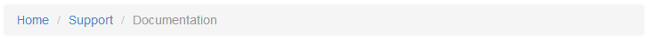
In the figure above, we have an example breadcrumbs for the documentation system of our site. Because the documentation pages can have deep nesting level, the breadcrumbs tell the user which page he is visiting right now so the user will not get lost and will be able to return to the page he visited previously, and to the upper-level pages.
To define the breadcrumbs, you use the ordered list <ol> element with the .breadcrumb
CSS class (see an example below):
<ol class="breadcrumb">
<li><a href="#">Home</a></li>
<li><a href="#">Support</a></li>
<li class="active">Documentation</li>
</ol>
Pagination
The pagination component is useful when you have a long list of items for display. Such a long list, if displayed on a single page, would require the user to scroll the page down several times to see the bottom of the list. To improve user experience, you would break the output into pages, and use the pagination component for navigation between the pages (figure C.12):
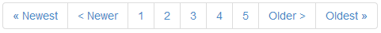
To define the pagination like in figure above, use the following HTML code:
<ul class="pagination">
<li><a href="#">« Newest</a></li>
<li><a href="#">< Newer</a></li>
<li><a href="#">1</a></li>
<li><a href="#">2</a></li>
<li><a href="#">3</a></li>
<li><a href="#">4</a></li>
<li><a href="#">5</a></li>
<li><a href="#">Older ></a></li>
<li><a href="#">Oldest »</a></li>
</ul>
Buttons & Glyphicons
Twitter Bootstrap provides a nice visual style for button elements (figure C.13).
To create the buttons like in the figure above, use the following HTML code:
<p>
<button type="button" class="btn btn-primary">Save</button>
<button type="button" class="btn btn-default">Cancel</button>
</p>
In the code above, we use the .btn CSS class to assign the button its
visual style. Additionally, we use the .btn-primary class for the Save
button (which is typically the primary button on a form), or the btn-default
class for a usual non-primary button Cancel.
To better express the meaning of a button, Bootstrap provides you with several
additional button classes: .btn-success (for buttons applying some change on the page),
.btn-info (for informational buttons), .btn-warning (for buttons that may have an undesired
effect), and .btn-danger (for buttons that may lead to irreversible consequences).
For an example of using these button styles, look at the code below:
<p>
<button type="button" class="btn btn-default">Default</button>
<button type="button" class="btn btn-primary">Primary</button>
<button type="button" class="btn btn-success">Success</button>
<button type="button" class="btn btn-info">Info</button>
<button type="button" class="btn btn-warning">Warning</button>
<button type="button" class="btn btn-danger">Danger</button>
</p>
Figure C.14 shows the resulting button appearance:
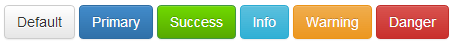
Bootstrap includes 180 icons (called Glyphicons) that you can use together with your buttons, dropdown menus, navigation links, etc. To add an icon on a button, you can use the code like the one below:
<p>
<button type="button" class="btn btn-default">
<span class="glyphicon glyphicon-plus"></span> Create
</button>
<button type="button" class="btn btn-default">
<span class="glyphicon glyphicon-pencil"></span> Edit
</button>
<button type="button" class="btn btn-default">
<span class="glyphicon glyphicon-remove"></span> Delete
</button>
</p>
In the code above, we defined a simple toolbar containing three buttons:
Create, Edit and Delete. We placed an icon on each button
with the help of <span> element. The <span> element should have two classes:
the .glyphicon class is common for all icons; the second class represents the icon name.
In the example above, we used .glyphicon-plus class for the Create button,
the .glyphicon-pencil for Edit button, and .glyphicon-remove for Delete button.
The result of our work is presented in figure C.15.
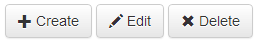
You can vary button sizes by specifying the .btn-lg class for large buttons, btn-sm for small
buttons, or .btn-xs class for extra-small buttons. For example, in figure C.16, a large Download
button is presented.
To define such a button, you can use the following HTML code:
<button type="button" class="btn btn-success btn-lg">
<span class="glyphicon glyphicon-download"></span> Download
</button>
Customizing Bootstrap
To finish the introduction to Twitter Bootstrap, we will describe about how to modify some aspects of Bootstrap framework. You can customize the Bootstrap look and feel using the Customize page of the Bootstrap website (figure C.17).
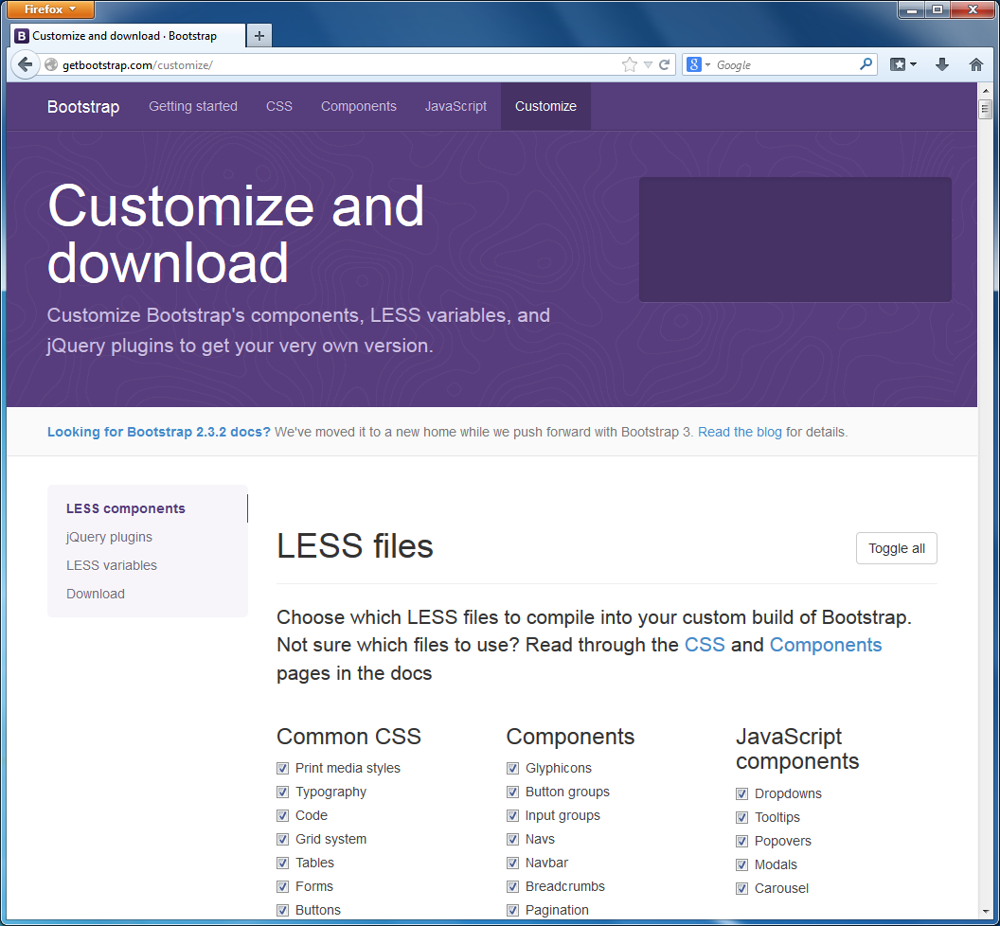
On the Customize page you can choose which Bootstrap source files to include into the "concatenated" resulting file bootstrap.css. If you don't need some functionality, you can exclude it from the resulting file, thus reducing the network traffic and page load time. You can also remove some unused JavaScript code components from the resulting bootstrap.js file.
Additionally, you can choose different CSS parameters like background color, base text color and font family, and so on. There are more than a hundred customizable parameters available.
CSS customization is possible, because Bootstrap source files are stored in LESS 3 format, which allows to define variable parameters (like
@bodyBackgroundor@textColor). Once the parameters are defined, the LESS files are compiled into usual CSS files, minified and made available for downloading.
When you have finished with tuning parameters, you can scroll the Customize page down and press the Compile and Download button. As a result, the bootstrap.zip archive will be downloaded, which contains all the customized Bootstrap files (both usual and minified CSS and JS files and glyphicons fonts).
Summary
Twitter Bootstrap is a CSS framework developed to make designing your web pages easier. It provides the default nice-looking style for typography, tables, forms, buttons, images and so on, so you can create a professionally looking page in a minute.
The grid system provided by the Bootstrap allows to arrange elements on your web page in a grid with rows and columns. The grid adapts to different screen resolutions, making your page equally well-readable on mobile phones, tablets, desktops and wide screens.
Twitter Bootstrap also provides useful web interface components like dropdown menus, navigation bars, breadcrumbs, etc. These components are made interactive by the JavaScript extensions bundled with the framework.
Bootstrap is shipped with Laminas Skeleton Application, so you can start using it out of the box or, alternatively, you can download the newest version of Bootstrap from the project's page and customize it as you wish.
-
After the concatenation and minification, the CSS code is difficult to read and debug. A MAP file (source map) allows to restore the minified file back to its usual state. ↩
-
You are not required to put exactly 12 columns in a row, there may be fewer columns. If you have fewer columns, the space to the right of the last column will be empty. ↩
-
LESS is a dynamic stylesheet language extending standard CSS with features like variables, mixins (embedding all the properties of a CSS class into another CSS class), code block nesting, arithmetic operations, and functions. ↩